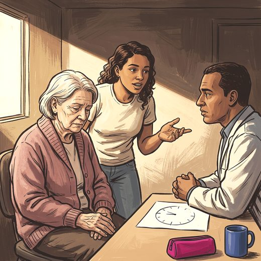

Consulta rápida à beira do leito
Condutas, doses e interações.
Referências da aula · 11
- Muñoz FL, da Cruz RF, Silveira LVA, Diaz MDP. Latent dimension of comorbidities and depression in older adults: a cross-sectional study using National Health Survey data, Brazil, 2019. Epidemiol Serv Saude. 2026;35:e20250722. doi:10.1590/S2237-96222026v35e20250722.pt.DOI
- American Psychiatric Association. Diagnostic and Statistical Manual of Mental Disorders, Fifth Edition, Text Revision (DSM-5-TR). Washington, DC: American Psychiatric Association Publishing; 2022.
- Sheikh JI, Yesavage JA. Geriatric Depression Scale (GDS): recent evidence and development of a shorter version. Clin Gerontol. 1986;5(1-2):165-73.
- Almeida OP, Almeida SA. Short versions of the geriatric depression scale: a study of their validity for the diagnosis of a major depressive episode according to ICD-10 and DSM-IV. Int J Geriatr Psychiatry. 1999;14(10):858-65. PMID 10521885. doi:10.1002/(sici)1099-1166(199910)14:10<858::aid-gps35>3.0.co;2-8.PubMedDOI
- Alexopoulos GS, Abrams RC, Young RC, Shamoian CA. Cornell Scale for Depression in Dementia. Biol Psychiatry. 1988;23(3):271-84. PMID 3337862. doi:10.1016/0006-3223(88)90038-8.PubMedDOI
- Taylor WD. Depression in the elderly. N Engl J Med. 2014;371(13):1228-36. PMID 25251617. doi:10.1056/NEJMcp1402180.PubMedDOI
- Alexopoulos GS. Depression in the elderly. Lancet. 2005;365(9475):1961-70. PMID 15936426. doi:10.1016/S0140-6736(05)66665-2.PubMedDOI
- Diniz BS, Butters MA, Albert SM, Dew MA, Reynolds CF 3rd. Late-life depression and risk of vascular dementia and Alzheimer's disease: systematic review and meta-analysis of community-based cohort studies. Br J Psychiatry. 2013;202(5):329-35. PMID 23637108. doi:10.1192/bjp.bp.112.118307.PubMedDOI
- Bellelli G, Morandi A, Davis DH, Mazzola P, Turco R, Gentile S, et al. Validation of the 4AT, a new instrument for rapid delirium screening: a study in 234 hospitalised older people. Age Ageing. 2014;43(4):496-502. PMID 24590568. doi:10.1093/ageing/afu021.PubMedDOI
- Inouye SK, van Dyck CH, Alessi CA, Balkin S, Siegal AP, Horwitz RI. Clarifying confusion: the confusion assessment method. A new method for detection of delirium. Ann Intern Med. 1990;113(12):941-8. PMID 2240918. doi:10.7326/0003-4819-113-12-941.PubMedDOI
- 2023 American Geriatrics Society Beers Criteria® Update Expert Panel. American Geriatrics Society 2023 updated AGS Beers Criteria® for potentially inappropriate medication use in older adults. J Am Geriatr Soc. 2023;71(7):2052-81. PMID 37139824. doi:10.1111/jgs.18372.PubMedDOI